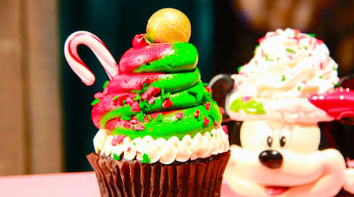

Food
It's the most wonderful time of the year! As soon as Halloween Time ends, Disneyland doesn't waste a second on transforming the park into the merriest place on Earth. My husband and I go every weekend during this time because it's our favorite time of the year. From the lighting of It's A Small World to the Do You Believe in Magic fireworks show, it truly is the merriest place on earth. One of the best parts is the food of course. Try these out on your next visit:
- Sour Apple Churro near Astro Blasters
- Churro with crushed pretzels and peppermint near Big Thunder Mountain Railroad
- Gingerbread Churro near Sleeping Beauty Castle
- Sugarplum Candy Churro near the Haunted Mansion
- Churro Sundae at the Golden Horseshoe
- Churro Bites with eggnog gelato at the Hungry Bear Restaurant
- Santa Hat Macaron at Jolly Holiday Bakery Cafe
- Caramel Apple Muffin with streusel at Jolly Holiday Bakery Cafe
- Eggnog Latte Cheesecake at Jolly Holiday Bakery Cafe
- Holiday Brownie at the Jolly Holiday Bakery Cafe
Souvenirs
My favorite time to shop for souvenirs is during the holiday time at Disneyland. My husband and I always get to excited when we see the holiday merchandise released. The holiday merchandise change every year so if you spot something you love, buy it or it won't be there next time you come back the following year. Here are my favorite
Entertainment
From all of the food and rides, it's always nice to sit and soak in the holiday spirit. What better way than enjoying one of these holiday awesome shows:
- A Christmas Fantasy Parade - see Mickey and Minnie in their finest holiday clothes
- Believe...in holiday magic fireworks - you don't want to miss the sky light up with red and green fireworks
- It's A Small World Lighting - one of my favorite traditions is watching It's A Small World light up from the outside
- Wintertime enchantment at Sleeping Beauty's Winter Castle - snow in southern California? You betcha!
Rides
Oh what fun it is to ride! Here are the rides that have transformed for the holidays:
- Haunted Mansion Holiday - see the Nightmare Before Christmas come to life!
- Jingle Cruise - what's cuter than an elephant wearing a Santa hat?